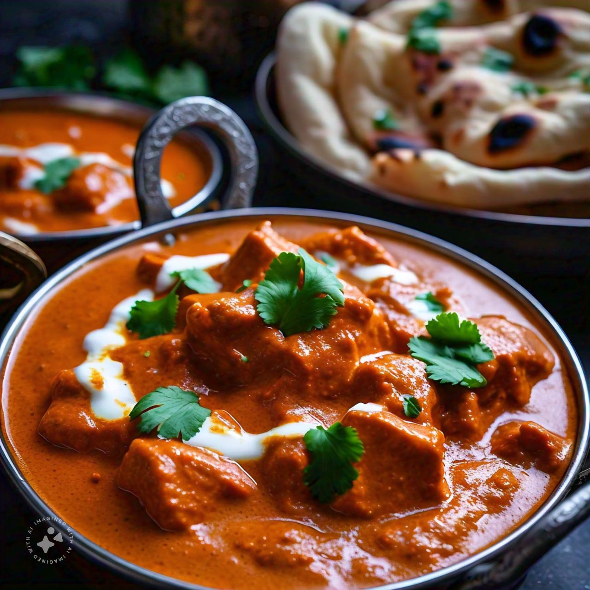

Butter Chicken

Description:
Butter Chicken Curry is a rich and flavorful dish originating from Indian cuisine. Known for its creamy texture and aromatic spices, this dish features tender pieces of chicken simmered in a buttery tomato-based sauce.
Traditionally served with naan bread or steamed rice, Butter Chicken Curry is a popular choice for those seeking a comforting and indulgent meal. Whether enjoyed at a restaurant or made at home, this dish is sure to satisfy and delight.
Ingredients:
- 1 cup butter, divided
- 1 onion, minced
- 1 tablespoon minced garlic
- 1 (15 ounce) can tomato sauce
- 3 cups heavy cream
- 2 teaspoons salt
- 1 teaspoon garam masala
- 1 ½ pounds skinless, boneless chicken breast, cut into bite-sized chunks
- 2 tablespoons vegetable oil
- 2 tablespoons tandoori masala
Steps:
- Gather all ingredients. Preheat the oven to 375 degrees F (190 degrees C).
- 1 tablespoon mincMelt 2 tablespoons butter in a skillet over medium heat. Stir in onion and garlic, and cook slowly until the onion caramelizes to a dark brown, about 15 minutes.
- Meanwhile, combine cream, tomato sauce, remaining butter, salt, cayenne pepper, and garam masala in a saucepan over medium-high heat; bring to a simmer.
- Reduce heat to medium-low, cover, and simmer, stirring occasionally, for 30 minutes. Stir in caramelized onions.
- While the sauce is simmering, toss chicken with vegetable oil until coated. Season with tandoori masala and spread out onto a baking sheet.
- Bake chicken in the preheated oven until no longer pink in the center, about 12 minutes.
- Add cooked chicken to the sauce and simmer for 5 minutes before serving.